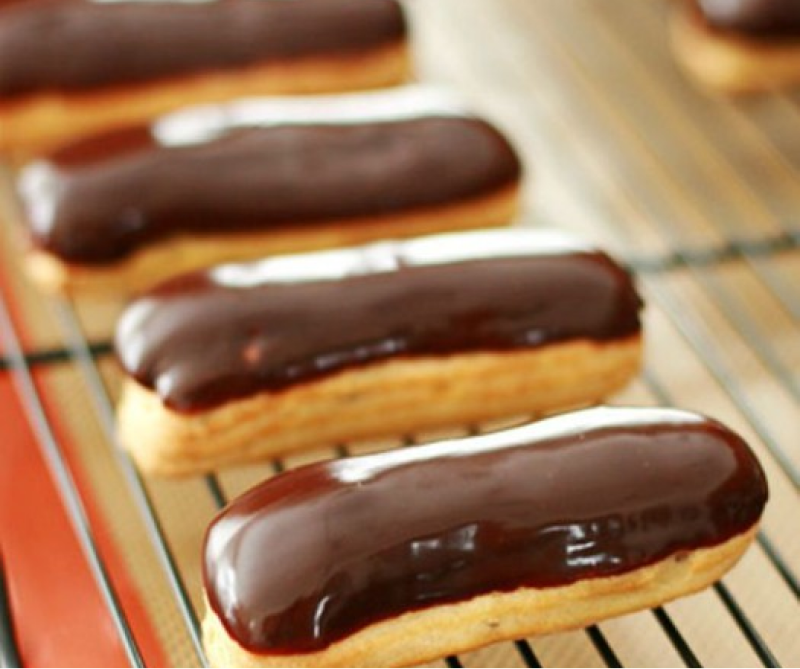
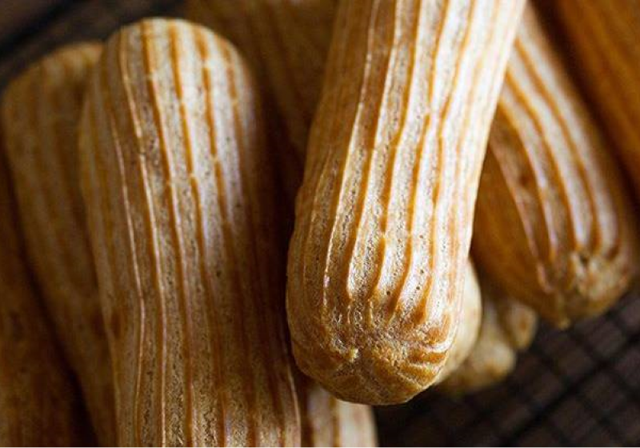
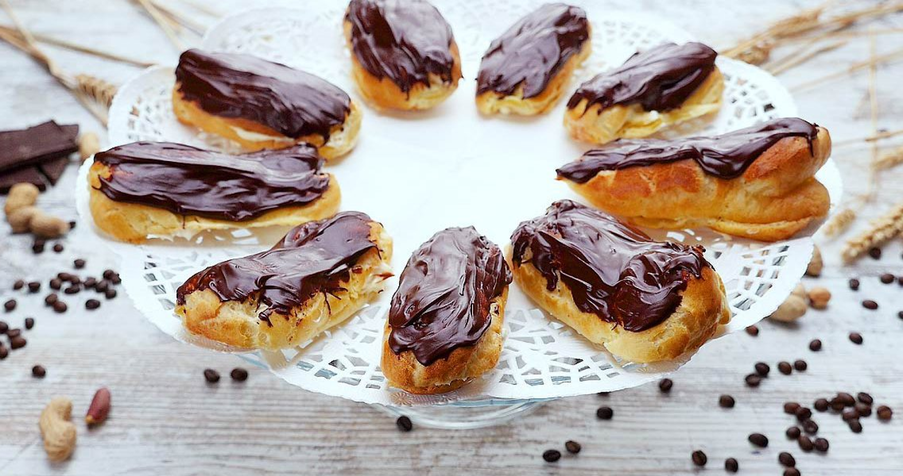

Бонжур, мої любі. Віртуальні валізки зібрали? Тоді – до Франції зі своїм гастрогідом Випікайкою! Як то кажуть, побачити Париж і... приготувати еклери!
Еклери – тістечка дивовижні. З заварним кремом або масляним, политі шоколадною глазур'ю або посипані цукровою пудрою – з'їдаються миттєво!
Багато моїх знайомих бояться братися за цей десерт, вважаючи його складним у приготуванні. Я збираюся розвіяти міф про складність приготування еклерів і запропонувати кращий рецепт еклерів, а також надійних помічників, з якими зробити смачні тістечка не складе труднощів.
Любов до еклерів вражає, як блискавка, – назавжди. Не випадково саме слово «еклер» перекладається з французької як «спалах, блискавка». Народилося тістечко у Франції, а одна з перших офіційних згадок про нього відноситься до 1884 року.
А ось заварне тісто – основа тістечка – з'явилося ще раніше: в середині ХVІ століття. Цікавий факт: творці еклерів, французи, вважають, що тістечка обов'язково повинні бути однакові, рівні і довжиною тільки 14 см.
Як приготувати заварне тісто для еклерів
1. Поставте на вогонь воду з маслом. Доведіть до кипіння.
2. Всипте борошно і мішайте, щоб вийшла однорідна маса.
3. На даному етапі тісто готове, коли почне відставати від стінок.
4. Остудіть тісто.
5. Добре змішайте тепле тісто з яйцями, додаючи їх по одному.
6. На застелене пергаментним папером деко відсадіть еклери.
7. Помістіть в піч при 200 °С, через 8-10 хв. знизьте до 190 °С. Тримайте ще 12-15 хв.

Як приготувати шоколадну глазур для еклерів
1. В першу чергу, дістаньте масло з холодильника, щоб до моменту приготування глазурі воно стало м'яким.
2. Розтопіть поламаний шматочками шоколад на водяній бані. Важливо, щоб дно ємності з шоколадом не торкалося киплячої води, а було на 1-2 см над нею.
3. В розтоплений шоколад додайте розм'якшене вершкове масло, перемішайте.

Як приготувати заварний крем для еклерів
1. Поставте на вогонь молоко з ваніллю. Як тільки закипить, зніміть з вогню.
2. Цукор розітріть з жовтками до отримання білої маси.
3. Змішайте борошно і крохмаль, додайте до цукрово-жовткової маси, продовжуючи розтирати, поки маса не стане гладкою.
4. Додайте масу до молока, з якого попередньо вийміть ваніль. Безперервно розмішуйте, щоб не було грудочок.
5. Поставте на середній вогонь, доведіть до кипіння, помішуючи дерев'яною ложкою. Дозвольте крему покипіти рівно 1 хвилину, весь цей час ретельно мішаючи.
6. Зніміть з вогню, додайте лікер, перемішайте.
7. Дайте крему охолонути. У той час, як крем остигає, перемішувати його не варто.
Як швидко наповнити еклери кремом
На щастя, асортимент сучасного кондитерського інвентарю настільки багатий, що вирішити проблему цілісності абсолютно не складно. Для швидкого, безпроблемного наповнення тістечок кремом варто скористатися кондитерським мішком і насадкою. Мішки бувають одноразові і багаторазові. Вибір залежить від вашого бажання або небажання мити інвентар після використання. Кондитерські мішки – якраз ті помічники, які візьмуть на себе роботу по швидкому, акуратному наповненню кремом улюблених ласощів. Нехай вони працюють, а ви насолоджуйтеся життям і кондитерською творчістю!
